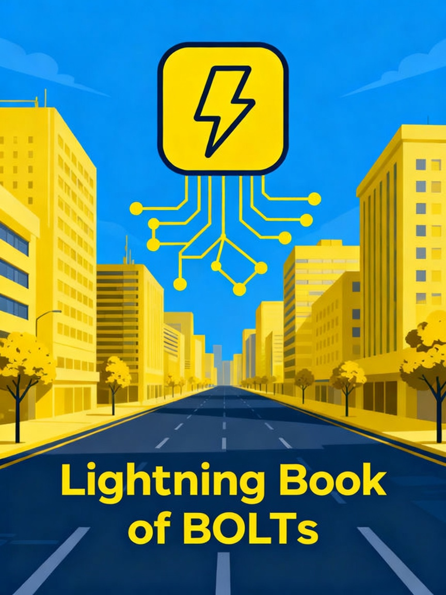

Lightning Book of BOLTs

The Lightning Network Specifications, grouped in the order a node actually uses them and bound as a book. The BOLT text is unchanged from the community repository; the reading order and chapter introductions are new.
Start with BOLT 00 if you are new. Then connect, open a channel, route a payment, and settle on-chain.